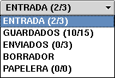

|
Las bandejas son herramientas muy útiles mara mantener sus mensajes organizados. Existen cinco bandejas predeterminadas, pudiendo usted además, crear las que le resulten necesarias. Las bandejas predeterminadas son las siguientes:
|
 |
- Entrada
- Guardados
- Enviados
- Borrador
- Papelera
|
La bandeja de Entrada es donde se depositan todos los mensajes recibidos (salvo que lo haya especificado de otra manera. Vea
Estableciendo un Filtro
para mayor información). Una vez que ha leído un mensaje y ya no lo necesita, ¿para qué mantenerlo ocupando su bandeja de Entrada? Tiene dos opciones: Puede moverlo a la Papelera o a otra bandeja. Si no va a necesitar de ese mensaje en el futuro, entonces es correcto que lo elimine. Puede hacer esto de dos formas:
Puede hacer un clic en el cuadro de selección del mensaje (
 ) y luego presionar el botón de la Papelera ( ) y luego presionar el botón de la Papelera (
 ). Cuando se le pida confirmación, haga un clic en "Si". La segunda forma es, nuevamente, hacer un clic en el cuadro de selección, luego seleccionar "Papelera" en el menú desplegable de la esquina superior derecha y hacer un clic en "Mover". The second way is to, again, select the checkbox, then select "Trash", in the drop menu on the top. O, si desea eliminar directamente el mensaje, seleccionar --BORRAR-- en dicho menú. Siempre que realice alguna acción "peligrosa" se le pedirá confirmación a través de un cuadro de diálogo. ). Cuando se le pida confirmación, haga un clic en "Si". La segunda forma es, nuevamente, hacer un clic en el cuadro de selección, luego seleccionar "Papelera" en el menú desplegable de la esquina superior derecha y hacer un clic en "Mover". The second way is to, again, select the checkbox, then select "Trash", in the drop menu on the top. O, si desea eliminar directamente el mensaje, seleccionar --BORRAR-- en dicho menú. Siempre que realice alguna acción "peligrosa" se le pedirá confirmación a través de un cuadro de diálogo.
Si cree que puede necesitar del mensaje para referencia futura, puede crear una bandeja para almacenarlo. Por ejemplo, si usted recibe frecuentemente mensajes sobre su trabajo, puede desear crear una carpeta llamada "Trabajo" para almacenar allí todos los mensajes relacionados con dicho tema. Para crear una bandeja siga los siguientes pasos:
- Presione el botón "Bandejas" en la Barra de Herramientas (
 ). ).
- En el cuadro debajo de "Nombre de la Bandeja", escriba el nombre de la bandeja que desea crear.
- Haga un clic en "Agregar".
Ahora dispone usted de una nueva bandeja. Cuando reciba varios mensajes sobre el mismo tema, puede moverlos hacia dicha bandeja para referencia futura. Esto facilita también el encontrar mensajes, porque estarán agrupados por tema. Sin embargo ni siquiera esto es totalmente necesario. Puede organizarlos como a usted más le convenga (por remitente, por fecha o por cualquier otro criterio que desee usar). Esto es todo lo que necesita saber para organizar sus mensajes.
Por favor, diríjase a
Moviendo y Copiando Mensajes
para aprender como almacenar sus mensajes en distintas bandejas.
Puede además administrar sus bandejas en el listado. Si no está en el area de bandejas, haga un clc en el botón "Bandejas" (
) para dirigirse allí. Puede realizar las siguientes acciones:
| Acción |
Que hace |
| Marcar leídos | Marca todos los mensajes en la bandeja como leídos |
| Verificar índice | Verifica la indexación de la bandeja |
| Re-indexar | Reconstruye totalmente la bandeja |
| Renombrar | Cambia el nombre de la bandeja |
| Eliminar | Elimina la bandeja y su contenido |
Puede navegar una bandeja y ver los mensajes que contiene haciendo un clic en su nombre en el listado de bandejas. Puede hacer esto, además, seleccionando su nombre en el menú desplegable de la esquina superior izquierda.
|